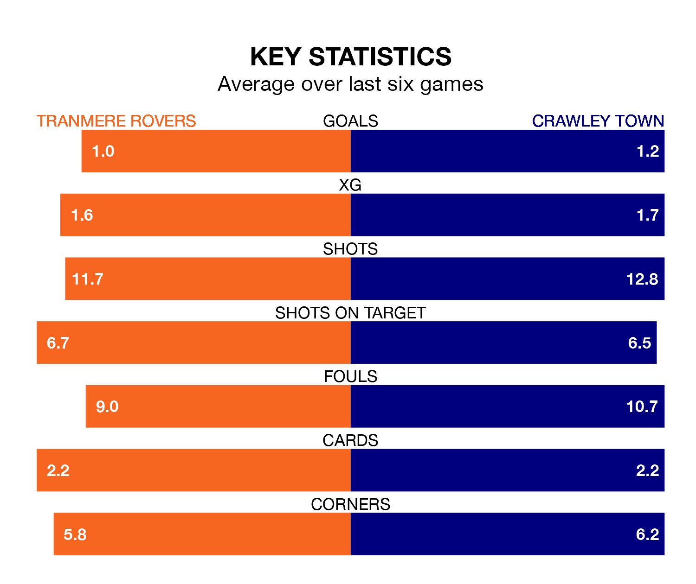

Crawley Town travel to Tranmere Rovers on Saturday in EFL League Two.
The visitors come into the game on the back of a draw in their last match, having tied with Stockport County 1-1 at home, with a goal from Klaidi Lolos.
Tranmere, meanwhile, won their last match, 1-0 against Wrexham, with their goal scored by Luke Norris.
In the last 10 years, Tranmere and Crawley have played each other on 11 occasions. Tranmere won five of them and Crawley six.
On average, Tranmere scored 1.3 goals and the Red Devils 1.5 in those matches.
Their last meeting was on September 16, when Crawley won 3-2 at home.
With 58 goals in 39 games so far this season, Tranmere are scoring at the league's average rate with 1.5 goals per game. And they are conceding fewer than average, letting in 54 goals at a rate of 1.4 per game.
Crawley are also average scorers, with 1.5 goals per game. They have conceded 1.4 goals per game.
Rovers are in mixed form in EFL League Two, with three wins and a draw from their last six games.
With four wins and a draw over that period, Town's form is better – they have taken 13 points from 18, compared to the home team's 10.
The Red Devils are ninth in the table after 37 games, of which they have won 17 and drawn five, earning 56 points.
Tranmere are six places behind the visitors in 15th, with 15 wins and five draws putting them on 50 points.
In Danilo Orsi-Dadamo, Crawley have one of the league's most on-form strikers so far this season. He has notched 15 goals in 36 appearances, to sit eighth in the scoring charts.
His goal rate of one every 211 minutes is quicker than that of Conner Jennings, Tranmere's top scorer with a goal every 297 minutes, and a total of 11 goals in 37 games.
Updated: 10:19 (UTC), 22/03/24